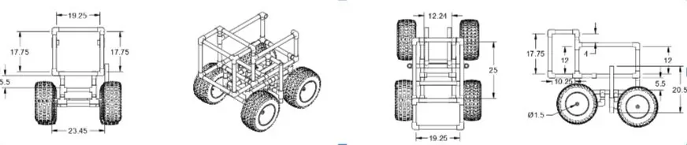
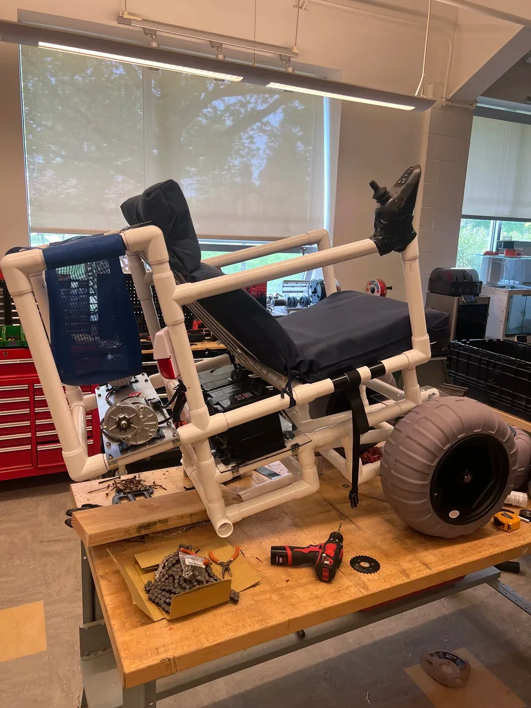
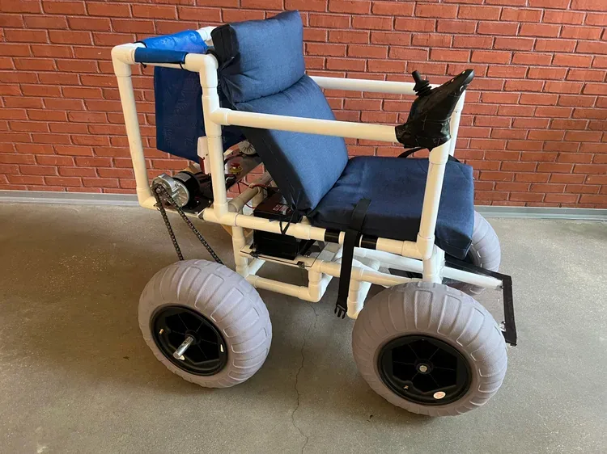
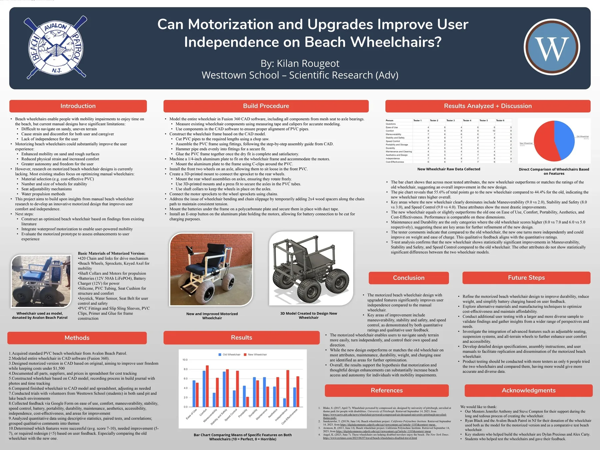

For Westtown School's Scientific Research (Adv) course I built a motorized beach wheelchair. Avalon Beach Patrol in New Jersey provided a manual beach wheelchair as the starting point. The goal was a version the user can drive without a caregiver, for under $1,500.
Overview
I began with the manual chair from Avalon Beach Patrol. Its main limitation is that it is hard to move through sand, so the user depends on someone else to push. I set a budget of $1,500 and looked at materials that would hold up to sand and salt water.
Design
I modelled the whole chair in Fusion 360:
- Mounts for the motors and battery boxes.
- Component placement chosen for weight distribution.
- Waterproofing worked into the layout from the start.
- Assembly drawings with dimensions.

Build
The frame is PVC cut and assembled to the CAD dimensions, with marine-grade hardware and reinforced joints.

Electronics and control
Two waterproof electric motors drive the rear axle by chain, powered by 12 V 50 Ah LiFePO4 batteries. The user drives with a joystick on the armrest, and there are redundant emergency stops. The electronics sit in a waterproof enclosure, and the chair also has a seat belt and a water sensor.

Results
Compared with the manual chair, the motorized version gives the user control through the joystick, is more stable on sand, and has waterproof electrics. Six testers rated both chairs in a sand pit and in a lake.
The new chair took 55.6% of the total rating points against 44.4% for the old one. The largest gains were in maneuverability (9.0 vs 2.0), stability and safety (8.0 vs 3.0) and speed control (9.0 vs 4.0). The old chair still scored higher on maintenance (8.0 vs 7.0) and durability (6.0 vs 5.0). At $1,500 the build cost about 50% less than commercial motorized beach wheelchairs, and it lets someone get onto the beach without a caregiver pushing.
Research poster
The poster for the course asked whether motorization and upgrades improve user independence on beach wheelchairs. It covers the methods, build procedure, test results, conclusion and future steps.

What I learned
The project taught me Fusion 360 modelling and assembly drawings, electromechanical integration, material selection for sand and salt water, waterproofing, and building to a cost target. The testing also showed where the trade-offs went: the motorized chair gained most in maneuverability, stability and speed control, while the manual chair still scored higher on maintenance and durability, so those are the two things to improve next.